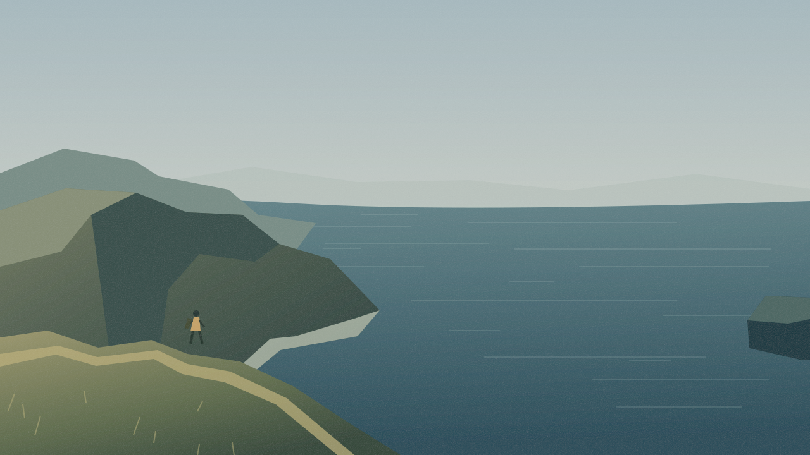

Go where
you feel small.NORTH COAST / SUMMER 2026
you feel small.NORTH COAST / SUMMER 2026
0:07.10/ 0:30.00
Tracks / 24 fps
0:000:060:120:180:240:30◆
Overlays / Motion
◇ Coast title
◇ End card
Text
A little further.
Captions
There is a place beyond the everyday.
Where the world opens.
Find your own way.
Video (main)
C0026_wide.mov
C0014_coast.mov
C0023_walk.mov
C0021_path.mov
C0026_wide.mov
B-roll
C0018_water.mov
Voiceover
There is a place…
Where the world opens.
Find your own way.
Music
Tidal / ambient score.wav
SFX
Coastal wind.wav
Footsteps